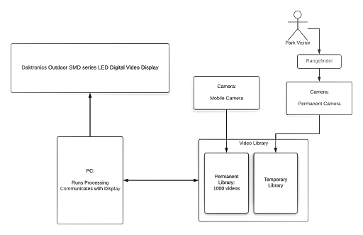

In the Public Eye
Project Background
“In the Public Eye” is a public art commission awarded to the University of Minnesota Art Professor Dianne Willow in 2016 which is to be placed in The Commons, a park near US Bank Stadium in downtown Minneapolis. It is to be an interactive art display that records fifteen-second eye portraits of park visitors who approach the display and replays them on a nearby building outfitted with LED panels. These videos will loop five times after being recorded, and then be deleted. In addition to the videos recorded by the camera in the park, a prebuilt archive of eye portraits will exist that have been collected prior to the installation of the exhibit in the park via a lightweight, portable version of the same project. The archive of videos collected by the mobile version will be transferred over to the computer intended for use in the park, and they will be displayed at random when there are no visitors interacting with the system.
As we are not the first group to work on this project, much of both the mobile and park systems are in place already. The immobile setup has a custom-built computer featuring an i3-8100 quad-core processor, a GTX1050 GPU, 16GB of RAM, an SSD, and 2TB of hard disk space. The most important aspects here are the graphics card and hard disk, as they are both very influential on the videos that the computer will be dealing with. 2TB of storage ensures that a massive quantity of eye portraits can be saved in the permanent archive, and even a large influx of users creating temporary videos in the park would not cause storage issues. The GPU, CPU, and a large amount of RAM ensure that the processes used under the hood of the project in order to keep everything running have ample resources to do so. In addition to the computer, a xiQ industrial camera is used to capture video. This item was donated to the project and is USB compatible, which makes communication between it and the computer simpler than alternatives. In order to detect the presence of people to initiate recording, an ultrasonic sensor is implemented. This hardware device is also USB compatible, so as to cut out the need for an Arduino or other intermediary device in order to communicate with the computer. It is capable of detecting up to five feet away, which is more than enough for the purpose of sensing a person at the other end of the chamber housing the camera. The chamber is also lit by a small strip of LEDs to ensure the videos have good lighting. Lastly, there is a small speaker that plays sounds indicating that the camera has initiated or finished recording. The mobile setup has very similar hardware, with the custom computer replaced by a mobile UDOO device, with 4GB of RAM and 32GB of storage, as well as an Intel Celeron quad-core processor. These specs make it a powerful mobile storage device perfect for collecting numerous eye portraits for the permanent archive.
The general system flow of the project is relatively apparent due to the nature of the art exhibit. In order to have eye portrait videos, users need to look into the camera chamber, which will trigger the ultrasonic sensor. This causes the computer to signal the camera to start recording and play the sound to match. After fifteen seconds, the recording is done and another sound is played. The computer then uses a pre-trained neural network structure to examine a few of the frames of the recorded video. If the neural network determines that an acceptable portion of the frames contain eyes, the video is saved and processed to be sent to the display. If the frames do not contain eyes, the video is thrown out. Additionally, if the video is recorded by the computer, it will not be added to the archive, but rather deleted after playing for five loops. When the system is idle in the park, with no one interacting with it, it will pull random videos from the prebuilt archive to display on the screens until a new visitor records one.
Artistic Significance
What makes this project unique is the artistic elements involved. Here are just a few.
Participatory
Display
Unlike most public art displays, In the Public Eye invites direct and hands-on interaction rather than discouraging it. This display will be fun, experiential, and 100% voluntary to visitors young and old of The Commons park. Encouraging the participation of the public keeps the project engaging and dynamic, even with the passing of time. There will always be something new and interesting to see on the displays.
Playful
Expressiveness
It is amazing how much you can tell about a person's mood just based on their eyes. A rolled eye tells that a person might be irritated, dilated pupils might tell us that someone was crying, and the wide open eye might tell us that something surprising has just happened. By taking 15 second videos as opposed to shorter clips or even pictures, the expressive nature of eyes is captured and shown across the displays.
Benevolent
Surveillance
As a public park, The Commons has a surveillance system designed for security. In the Public Eye proposes an alternative. What would happen if the public, the residents of Minneapolis and the park visitors, had their watchful and caring eyes on The Commons. In the Public Eye aims to show a creative and participatory side of surveillance by displaying a continuous stream of video portraits, recordings of the eyes of the public, as they watch over their park.
Project Flow
The Image below shows the current idea for the proposed project flow. Note, a fair amount of this is already implemented.  The general idea of operations goes as follows:
- A visitor walks up to the camera assembly and intuitively places their eye in front of the camera (good, intuitive UI)
- The proximity sensor on the camera detects that a person is present and plays a confirmation beep to inform the user that they have been detected
- The camera starts recording for 15 seconds which is followed by a recording stopped sound
- The recorded video is confirmed to be an eye using a Neural Network. Once the results are confirmed, the video is stored to a temporary library along side several others in the permanent library
- These eye videos are processed (downsampled) and then sent to the outdoor LED displays described above
With this project background and layout in mind, please take a look at the where to start guide. This should be helpful in navigating you to the correct files and helping you get a headstart on the project.